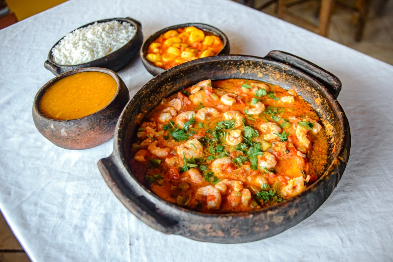

MOQUECA CAPIXABA
A moqueca capixaba é uma explosão de sabores leves e frescos do Espírito Santo. Feita em panela de barro, ganha um aroma irresistível à base de peixe fresco, urucum, pimenta, tomate e um toque especial de coentro, sem o uso de leite de coco ou dendê. O colorau dá um tom vibrante ao prato, que fica suculento e saboroso, ideal para acompanhar arroz branco e um delicioso pirão. Cada garfada revela o gosto autêntico do litoral capixaba, perfeito para quem deseja uma refeição simples e encantadora.

ingredientes (6 porções)
- 1 kg de peixe (badejo, dentão, robalo, papaterra, dourado, namorado ou xerne)
- 1 maço de cebolinha verde
- 3 dentes de alho
- Pimenta malagueta
- Urucum
- 1 maço de coentro
- 1 cebola média
- 4 tomates
- Azeite de oliva
- Óleo de soja
Modo de preparo (45 minutos)
- Escame bem o peixe, tire as vísceras e corte-o em postas de 5 cm de largura
- Lave bem com limão e deixe descansando em um prato com água de sal fraca.
- Soque o alho, três rodelas de cebola, um maço de coentro picado, um maço de cebolinha verde e sal.
- Esfregue no fundo da panela de barro um pouco de óleo de soja (duas colheres) e azeite de oliva (uma colher).
- Adicione à panela a massa obtida no socador, passando-a no seu fundo.
- Retire as postas de peixe do prato com água e sal.
- Vire as postas de um lado para o outro nos temperos da panela.
- Arrume-as de modo que não fiquem umas por cima das outras.
- Corte o resto do coentro, da cebolinha verde, do tomate e da cebola e coloque nesta ordem por cima das postas de peixe que estão na panela.
- Regue com um pouco de azeite e suco de limão.
- Deixe tudo descansando por 20 a 60 minutos.
- Derreta em um pouco de óleo três colheres de urucum.
- Na hora de levar ao fogo para cozinhar, despeje um pouco deste caldo por cima da moqueca.
- Quando começar a abrir fervura, verifique o sal.
- Não ponha água, não vire as postas e cozinhe com a panela aberta.
- Vá verificando o paladar do sal e do limão.
- Deixe no fogo forte por 20 a 25 minutos.
- Balance de vez em quando a panela com o auxílio de um pedaço de pano grosso, para que as postas de peixe não agarrem no fundo.
- Vai bem com arroz branco, um belo pirão e um belo molho.